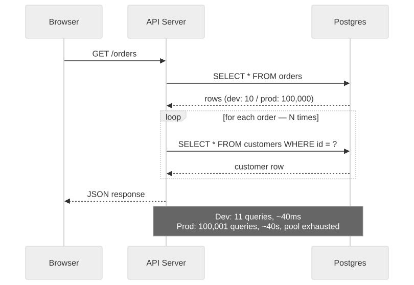

2 — 40ms locally, 40 seconds in production
Same code. Same query. A hundred times the rows. The database was never part of the design.
Small data hides big-O sins. One query per row is indistinguishable
from fast when the row count is fifty. ORMs make this easy to write
and nearly invisible in review — orders.map(o => o.customer.name)
reads beautifully and is a disaster waiting for real traffic. AI
assistants reproduce this lazy-loading idiom constantly, because it
dominates the training data: it's the pattern every tutorial uses,
because every tutorial's example table has ten rows in it.

Eleven queries in dev. A hundred thousand and one in production. Same loop.
This isn't a one-off oversight — it's what the model optimises for. EffiBench, which benchmarked 42 LLMs on runtime efficiency, found GPT-4-generated code runs roughly 3.1x slower than the canonical human solution on average, and up to 13.9x slower with 43.9x more memory in the worst cases — while still being functionally correct. Functionally correct is what passes a test suite. It has nothing to say about query plans.
Missing indexes make this worse because they're silent. Postgres will happily sequential-scan a 500-row table — correctly, that's the right plan at that size — and then sequential-scan the same query against 2 million rows with no error, no warning, just a 2ms query that's quietly become a 4-second one. One widely shared write-up described identical code going from 11 queries and 10 rows in dev to 40,001 queries and 40,000 rows in production, passing every test the whole way. These are individual engineers' accounts, not corporate postmortems, but the shape recurs constantly enough to trust the pattern even where the exact numbers are anecdotal.
The serverless era adds a second failure mode on top: no connection
pooling. Postgres defaults to max_connections=100, and
every serverless invocation that opens its own direct connection
burns through that ceiling in seconds under any real burst of
traffic — not because the query is slow, but because there's nowhere
left to put it.

Without a pooler, connection count scales with traffic. With one, it doesn't.
None of this needs a rewrite — it needs a habit. A query budget per
request enforced in CI (Bullet, Django Debug Toolbar, Prisma's query
logs all catch this cheaply), EXPLAIN ANALYZE before
anything ships, indexes chosen from observed access patterns rather
than guesswork, and load-testing with production-shaped data instead
of the ten rows sitting in your seed script. A pooler in front of the
database is table stakes the moment you're serverless.
If you've shipped fast with AI tools and want a second pair of eyes before it goes further, that's exactly what a vibe code audit is for.